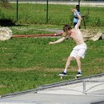

Hola, je m'appelle Thibault Giquet de Preissac
Bonjour à tous, je m'appelle Thibault Giquet de Preissac et je suis étudiant à l'EMLV en 1ère année. Il s'agit d'une école de management issue du pôle Léonard de Vinci. Elle propose des formations en Marketing Digital, en finance et en Management. Je suis de plus passionné de skateboard. Je pratique cette discipline depuis 5 ans et je participe notamment aux championnats de France
Le skateboard dans toute sa splendeurLe skateboard:un moyen de ne pas marcher!
J'aime le skate avant tout parce que je me sens libre, je ne pense à rien lorsque je fais du skate. La seule chose qui me traverse l'esprit est la façon dont je pourrais effectuer le prochain trick. Il y a autant de façon de skater qu'il y a de skateurs. Certains seront plus attirés vers la courbe et la verticalité, d'autres par la technicité et la multiplication de tricks en un combo tandis que d'autres seront juste là pour sauter de grands espaces. 
Le football:une deuxième nature
J'aime bien le foot également, un tel esprit d'équipe témoigne d'un sport de haute catégorie. J'en ai beaucoup fait lorsque j'étais plus jeune. J'ai malheuresement arrêté mais retrouve le chemin du ballon depuis 1 an. J'aime assez peu regarder les matchs, je trouve ca ennuyeux.